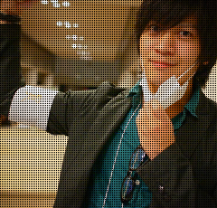

Speeeは8日間のサービス開発型サマーインターンを就活生の皆さんに向けて開催します。このインターンを通じ、"サービスを創る"ということを、企画・開発・運用まで一貫して学んで下さい。トップエンジニアが本気でFBし、プロの開発技術を伝授する。そんな、ホンモノの成長機会となる8日間です。
全国よりトップレベルのエンジニア学生が集結し、チーム開発に挑戦。Speeeのトップエンジニアがフルコミットし、皆さんに実践的な開発技術を伝授します。開発思想のレクチャーからコードレビューまで個々の成長に本気で向き合い、最高の成長機会をお届けします。
"数百万人が利用するWebサービスの企画・開発"
大規模トラフィックを想定し、高負荷を見越したパフォーマンスチューニング等、企画・開発だけではなく運用まで見越した設計・開発をチームで行います。本やWebでは学べない、プロの現場ならでは技術をトップエンジニアから学び、最高のプロダクトを創り上げて下さい。

| レクチャー＆企画 まずはエンジニアによる開発レクチャーからスタート。インプットの後は、初めて出会ったチームメンバーと企画にもチャレンジ。 |
|
| 開発・フィードバック 実装をしていく中で困ったらメンターに相談。プロのエンジニアから近くでフィードバックを受けられる環境を味わって下さい。 |
|
| 中間報告 中間報告ではメンター以外のエンジニアからもフィードバックを受けられます。様々な観点から受けたフィードバックをもとに、更に開発を加速させて下さい！ |
|
 |
開発・フィードバック チームで足並みそろえ、最終発表に向けた実装を行っていただきます。難易度の高い課題に対して迫る期限を見据え、プレッシャーと高揚感を感じて下さい。 |
| 最終発表 経営陣やトップエンジニアに向けて、最後のプレゼンテーションを行います。優秀者にはインターン後にも社員限定エンジニア勉強会への招待等、インターン後にも成長機会を提供します。 |
- 「使用技術・言語」
- 参加に必要なものは、能動的にプログラミングに取り組み、楽しむ姿勢。是非自身のスキルがどこまで通用するか、チャレンジして下さい！
Yoshiki
新卒から大手コンテンツメディアを多数開発し、大手SAPへ転職、某大ヒットソーシャルゲームの開発リーダーを務める。その後、エンジニアとしての起業独立を経てSpeeeにJoin。Speeeではサーバサイド領域を主軸に、開発マネージャーを務める。高負荷へのパフォーマンスチューニングを得意とし、新規サービスの技術統括やメンバー育成・採用など幅広く活躍。
Kotaro
- 
- 僕が目指しているのは、『アイデアからモノを創造することができるエンジニア』です。アイデアは具現化してこそ面白さを実感できるし、実現したいアイデアがあるからこそ技術を高めたいと思える、Speeeインターンはまさにそれを伝えてくれるものだったと思えます。企画・開発・活動姿勢それぞれの面において熱意あるフィードバックを受けながら、『本気のものづくり』の大変さと楽しさを学ぶことができましたし、『フィードバックによる成長』という点においても非常に徹底されたインターンでチームに対しても各個人に対しても行動を振り返る機会を何度も得られました。
Takafumi
- 「自分のスキルは社会で通用するのか」という疑問を解決するため、インターンに参加。Speeeのインターンは、自分たちが考える企画を、ただ実現するだけではなく「実際の利用に耐えられる強固なバックエンドを構築できるか」、「今まで触ったことの無い技術に、真剣に取り組んでいるか」という様々な面からフィードバックをもらいました。また、インターンで得たい成長や、就活に関する不安、エンジニアとしての有るべき姿、自分が実現したい理想の働き方など、Speeeの社員の方と関わるタイミングで、真摯に相談に乗って頂け、漠然としていた働いている未来の姿を想像できるようになりました。
- ［応募期間］
- 2014年6月17日（火）～2014年8月8日(金)
- ［実施期間］
- 2014年9月15日(月)～9月22日(月)
- ［開催会場］
- 株式会社Speee、および都内宿泊会場
- ［ 手当 ］
- 宿泊施設手配。
交通費支給（関東圏以外からの参加者）。 - ［ 選考 ］
- エントリー→マイページにて技術書類提出
→書類選考→個別面接→インターン参加 - ［必須項目］
- 能動的なプログラミングの学習経験
- ［推奨項目］
- PHP・MySQL・Linux・JavaScriptの経験